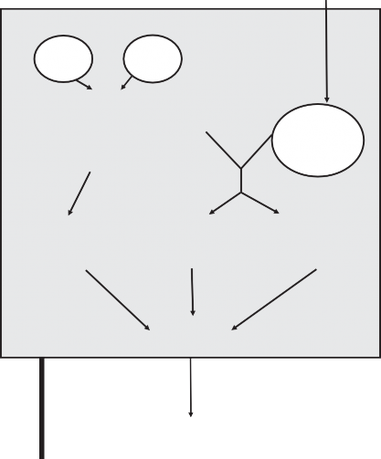

CLIMATE PREDICTION CENTER

Initial review of stock assessment
Fishing season
Final stock assessment and HG decision. HG is updated and informed by the latest (shorter lead time) SST forecast
Operational SST monthly forecast
Past SST
data
Fishery data
FISHERIES MANAGEMENT AGENCY
Harvest guideline (HG)
Emsy
Forecast of next year’s biomass (Bt+1)
Estimate of
biomass for upcoming fishing season (Bt)
Development of stock assessment model with SST explicit stock-recruitment and of SST-Emsy relationship
Management time frame (months)